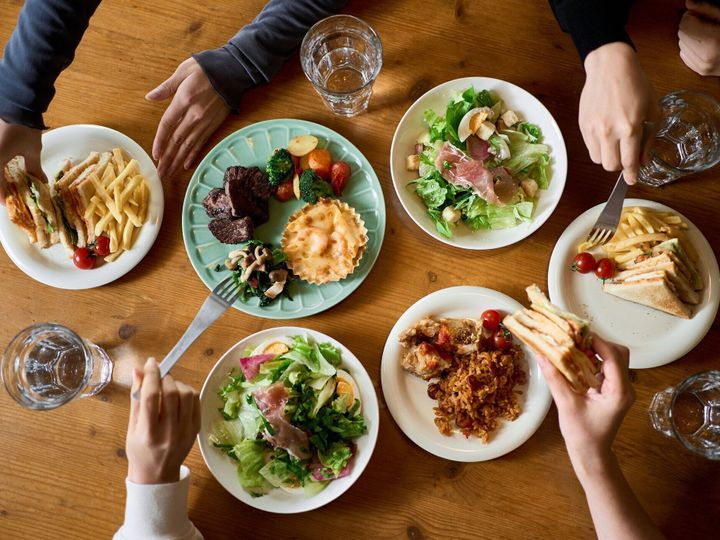

お昼休憩や放課後、結局いつもの店に行ってしまう...
近くに美味しい店があるはずなのに、どこにあるか分からない...
どこに行くか迷って、貴重なお昼休みが減っていく...
気になるお店を保存して、いつでもチェック。お気に入りのリストを作成できます。
誰が何店舗行ったかが一目で分かる。友達と競い合って新しい店を開拓しよう!
あなたが見つけた隠れた名店を登録して、みんなとシェア。グルメコミュニティに貢献できます。
無料でアカウントを作成して、すべての機能を使おう
地図からサクッと検索。気になるお店をブックマーク
お店に行ったら記録して、月間ランキングで上位を目指そう
まだ登録されていない素敵なお店を見つけたら、ぜひシェアを!
毎日のランチタイムと放課後が、もっと楽しくなる
無料で始める →